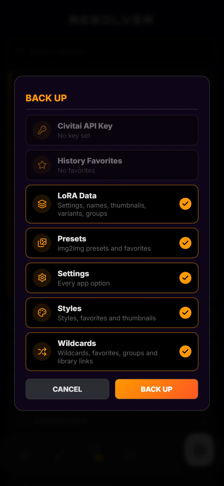

Docs / Settings
Backup & Restore
Your styles, LoRA settings, wildcards and favorites live on the phone. A backup keeps them safe, and moves them to a new phone or a fresh install.
Making a backup
Config → System Settings → BACK UP lists the parts; tick the ones you want and confirm. The file goes to the phone’s Documents folder. A part you have nothing for yet (no Civitai key, no favorites) is greyed out.
- Civitai API Key
- Saved as plain text in the backup, so it starts unticked.
- Comfy Templates
- Your saved ComfyUI workflows.
- History Favorites
- Your favorite images themselves, with what History keeps about them. Starts unticked, as it can be large.
- LoRA Data
- Settings, names, thumbnails, variants and groups.
- Presets
- img2img presets and favorites.
- Settings
- Every app option (Config, each tab’s saved values and defaults, Checkpoint Manager…).
- Styles
- Styles, favorites and thumbnails (and Forge Couple layouts).
- Wildcards
- Wildcards, favorites, groups and library links.

What you get
Tick parts to see the file the app makes:
Saved to Documents
Restoring
- Tap RESTOREConfig → System Settings → RESTORE, and choose a backup file (a .zip or a single part’s file).
- Pick the partsThe app shows what the file holds and when it was made; tick what to bring back.
- DoneEach part is restored on its own, so one that fails doesn’t stop the rest; the message lists any that couldn’t be. Older Resolver backups work too.
Not in a backup
- Your History other than favorites (use Download or Auto-Save to keep images).
- The queue, recent lists (prompts, uploads) and caches.
- Anything on your PC: checkpoints, LoRA files, Forge’s own settings.
Clean up model data
Deleted some LoRAs or checkpoints on the PC? The app still keeps their settings and thumbnails. Config → System Settings → CLEAN UP MODEL DATA asks Forge for its current lists, shows what belongs to files that are gone (and thumbnails of styles you deleted), and clears it once you confirm. It never guesses: if Forge’s list can’t be read, nothing is removed.
Reset app configuration
RESET APP CONFIGURATION sets every Config option back to its default and puts the example wildcards back. Your server connections, prompts, History, styles, LoRAs, presets and other saved content are kept, and so is an installed app update. Make a backup first if you want to return to your settings.